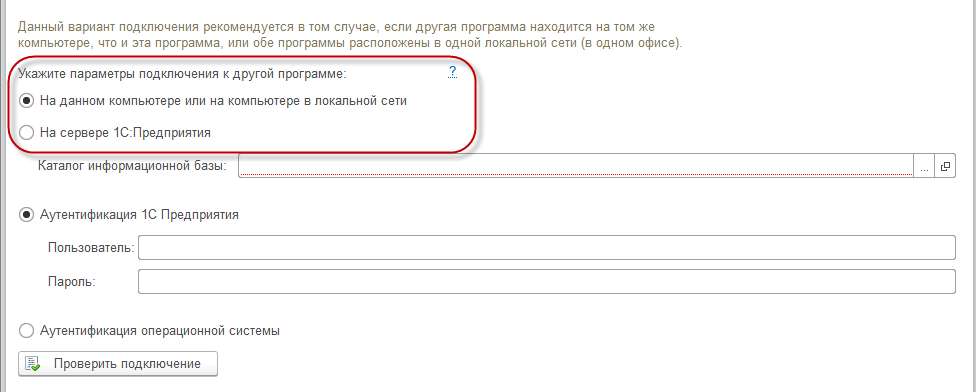
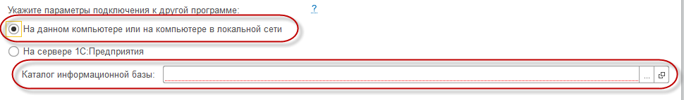
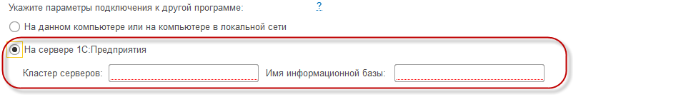
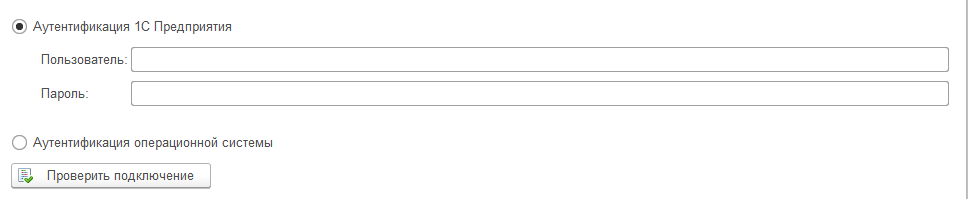
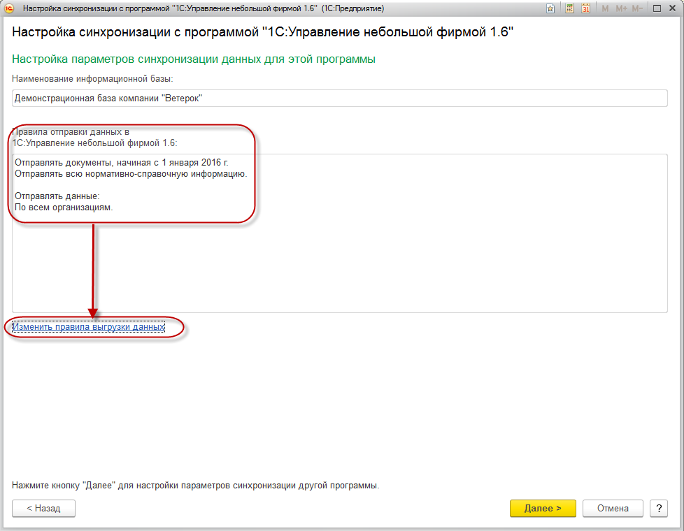
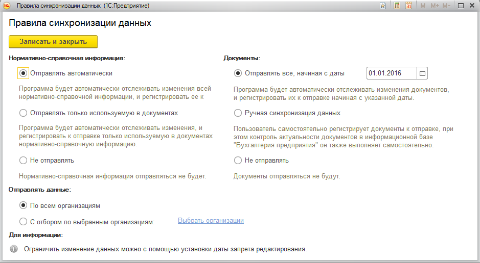
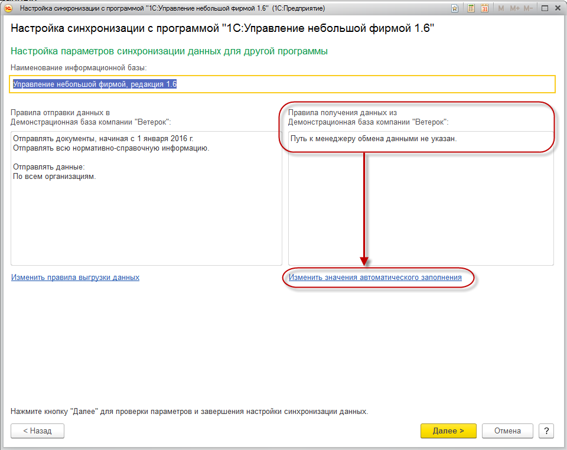
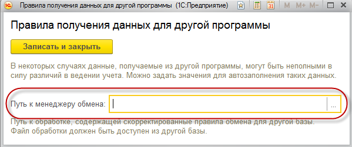
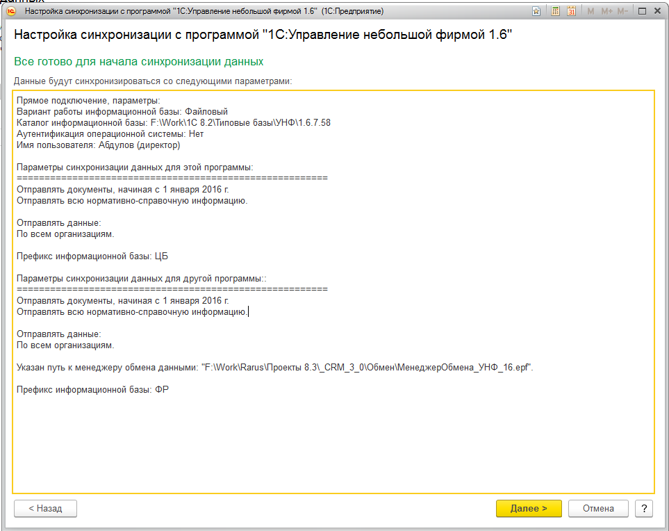
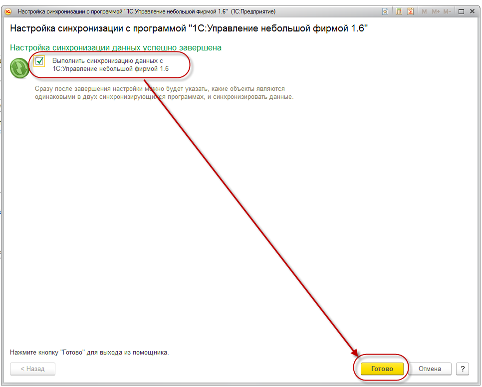

Прямое подключение может быть выполнено к другой конфигурации на данном компьютере или в локальной сети или же информационная база может находиться на сервере 1С:Предприятие 8.

Если программа находится на данном компьютере или в локальной сети, то следует указать каталог информационной базы:

..., если же на сервере 1С:Предприятия, то потребуется указать "Кластер серверов" и "Имя информационной базы":

Далее, вне зависимости от варианта подключения, нужно указать вариант аутентификации. При выборе "Аутентификация 1С:Предприятия" необходимо указать
"Пользователя" и "Пароль" с полными правами (указывается, если в базе с которой настраивается обмен есть пользователи; в противном случае, эти поля можно оставить пустыми).
Для проверки корректности введенных данных, можно нажать кнопку "Проверить подключение".

После того, как указали параметры подключения переходим на следующую страницу по кнопке "Далее".
Важно! Для возможности настройки синхронизации через прямое подключение, требуется включить использование синхронизации данных в конфигурации к которой настраивается синхронизация. Как это сделать описаное в Шаге 3.
На следующей странице мастера возможно посмотреть и настроить параметры отправки данных из 1С: CRM 3.0:

Для настройки параметров нужно нажать гиперссылку "Изменить правила выгрузки данных" и выбрать варианты синхронизации справочников и документов и нажимаем команду "Записать и закрыть":

После настройки параметров выгрузки данных из 1С: CRM 3.0 переходим на следующую страницу по кнопке "Далее". В открывшейся форме возможно указать параметры синхронизации для другой программы. Собственно есть только один параметр: "Путь к менеджеру обмена данными". "Путь к менеджеру обмена данными" - это путь к файлу внешней обработки, которая содержит в себе доработанные правила обмена данными для корректного обмена данными с решением 1С: CRM 3.0 и используется конфигурацией, с которой настраивается обмен данными.
Важно! Без указания правил обмена данных из внешней обработки НЕ гарантируется правильность отправки и получения данных при обмене!

Изменить путь к менеджеру обмена данными можно по гиперссылке "Изменить значения автоматического заполнния".

Для каждого из перечисленных выше программных продуктов фирмы "1С", с которыми можно настроить обмен, предназначена соответствующая обработка менеджера обмена.
Все эти обработки расположены в каталоге шаблонов обновлений в папке соответствующего релиза. Узнать расположение каталога шаблонов обновлений можно непосредственно
в окне запуска программы 1С:Предприятие 8, нажав кнопку "Настройка".
Важно! Файл внешней обработки менеджера обмена должен быть доступен автоматически из базы данных, с которой настраивается обмен. Если нет возможности указать путь к внешней обработки на этом этапе настройки обмена, то это возможно будет сделать позже в насйтроке обмена базы, с которой настраивается обмена. Это будет описаное на Шаге 3.
После того, как указали настройки по кнопке "Далее" переходим на страницу мастера, на которой выведена итоговая информация и настроенных параметрах синхронизации.

Убедившись, что все впорядке, выбираем команду "Далее". На последней странице мастера настройки синхронизации данных предлагается выполнить синхронизация сразу после завершения настройки по команде "Готово". Если на предыдущих этапах был указан путь к внешней обработке менеджера обмена, то рекомендуется выполнить первую синхронизацию. Иначе рекомендутся отключить выполнение
первой синхронизации: ее можно будет выполнить позже.

Шаг 3. Настройка обмена в конфигурации "1С: Бухгалтерия предприятия"